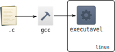

Lab 3 - Compilação usando GCC
Ontem fizemos atividades de programação em C e a parte de compilar e executar um
programa ficou escondida de vocês, pois não era o objetivo da atividade (quando
executavam no terminal o make).
Esta leitura visa familiarizá-lo com as ferramentas de compilação de código em C usando o compilador gcc.
Tip 1
Para memorizar os comandos usados, é muito mais fácil digitá-los no terminal ao invés de copiar e colar.
Info
Makefile é uma ferramenta muito utilizada que automatiza a compilação de programas em C, ela é utilizada por exemplo no kernel do Linux e em muitos outros programas. Por enquanto não iremos mexer com o make. Mais para o final do semestre teremos algumas atividades disso.
O que é "compilar" um código
Diferente de Python, em que podemos rodar diretamente o script, ou Java, em que criamos um arquivo binário multi-plataforma, programas em C precisam ser convertidos em instruções nativas do processador para serem executados. Chamamos esse processo que transforma código em instruções executáveis por uma CPU (física ou virtual) de compilação. O resultado final da compilação de um programa em C é um arquivo executável específico para uma arquitetura de CPU e sistema operacional.
Veremos mais detalhes de como essa transformação para código de máquina ocorre em Sistemas Hardware-Software.
Compilação (simples) via linha de comando
Usamos o comando gcc para compilar programas em C. Para diminuir a quantidade de erros nos programas podemos passar como argumento algumas flags para exibir erros comuns e para fazer somente otimizações que não atrapalhem debug (-Og).
$ gcc -Wall -pedantic -std=gnu99 -Og -o executavel arquivo.c
-Wall: habilita todos avisos do compilador. Este modo indica possíveis erros cometidos no programa.-pedantic: modo de compilação mais estrito e mostra ainda mais avisos-std=gnu99: versão da linguagem C usada (C99) mais extensões para sistemas POSIX GNU (veremos o que isto significa mais para frente).-Og: somente aplicar otimizações que não atrapalham debuging.-o: output -- nome do executável gerado
Usando este comando podemos compilar um programa definido em um único arquivo .c.

Exercise 1
Os programas abaixo devem ser feitos criando um arquivo vazio baseado no printf.c.
Exercise 2
Exercise 3
Facilitando o uso da entrada e saída padrão
Para interagir com nossos programas precisamos digitar valores e strings no terminal. Isto se torna chato e repetitivo bem rápido. Para facilitar, podemos utilizar o recurso de redirecionamento de entrada do terminal. Veja o exemplo abaixo.
$ ./prog < arquivo_entrada.txt
O programa prog será executado como se o conteúdo do arquivo arquivo_entrada.txt tivesse sido digitado no terminal. Assim, podemos testar facilmente programas como o criado na Tarefa 3 acima sem precisar digitar sempre a mesma entrada.
Exercise 4
Exercise 5
Exercise 6
Bibliotecas
A tarefa 3 do lab passado usava funções trigonométricas do cabeçalho math.h. Somente incluir math.h não é suficiente para que o programa funcione, é preciso incluir também a implementação dessas funções. Fazemos isso adicionando flags começando com -l no fim de sua linha de compilação do gcc.
Exercise 7
Sempre que for necessário incorporar funções disponíveis em bibliotecas externas usaremos essas flags iniciando com -l. Veremos isso mais em Sistemas Hardware-Software.